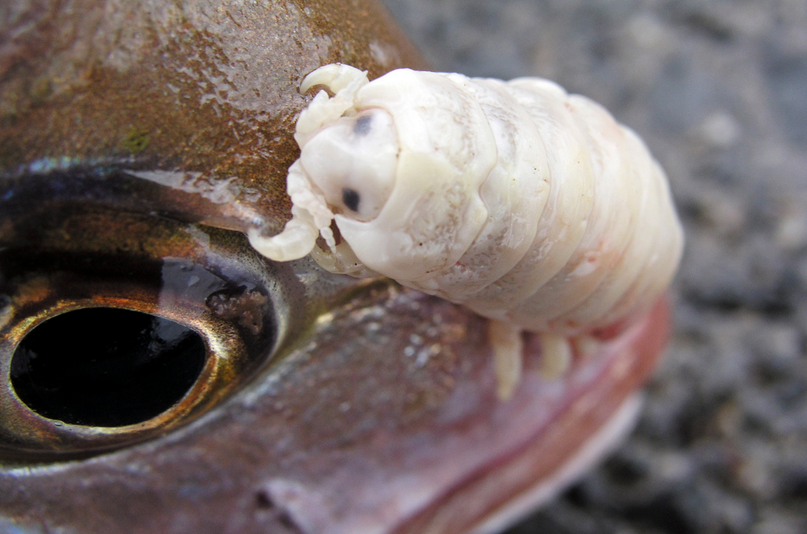
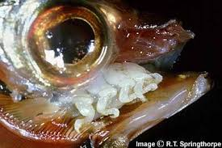
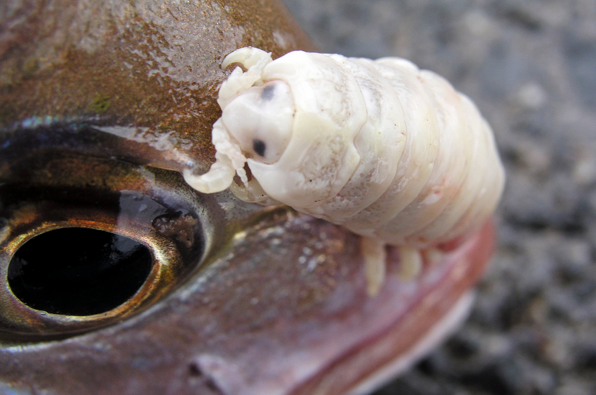
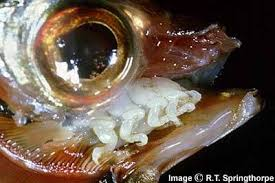

Touge Eating Louse
a.k.a.Cymothoa Exigua
Pulling out a female tongue eating louse
Like a mini crabs that live on your tongue
Cymothoa exigua is an isopod (like crabs or lobster) and is a fish parasite. The females can grow to about an inch in length and males about half that. It is the only known organism to replace an entire organ of its host species, in this case, the poor fish’s tongue. It primarily targets the snapper, but has be seen in 7 other other fish species. These organisms are known as a protandric hermaphrodites, which means they start their lives as males and actually switch sexes later on in their life cycle.
 



The parasites start their quest by swimming inside of a fish’s gills. Once there, they will secure themselves to the gills until their maturation process is complete. Eventually, once the young tongue lice have developed, one changes its sex from male to female. After this process is complete, the louse will detach itself from the gills and slowly climb to the base of the tongue, which she (apparently) thinks is a fantastic place to call home.
Using her incredibly strong hind legs, the louse then secures herself to the fish’s mouth–settling there permanently. In order to establish a permanent residency, the louse pierces the fish’s tongue with her powerful bite. After she makes an incision, she starts to suck her fill of blood. This insatiable appetite eventually leads to the depletion of all the blood in the fish’s tongue. As a result, the fish’s tongue atrophies, withers away, and falls off.
What is left after this process is compete is a rather large crustacean, securely held to the fish’s (now destroyed) organ. As unpleasant as this must be, the process does not kill the fish; on the contrary, the fish actually starts to use the parasite as a pseudo-tongue of it as a kind of an organic prosthetic. With such a large organism living in its mouth and taking up so much space, the fish could actually eat and survive.
Mating
The males hang out around the gills of the fish and then mate with the female or the pseudo-tongue.